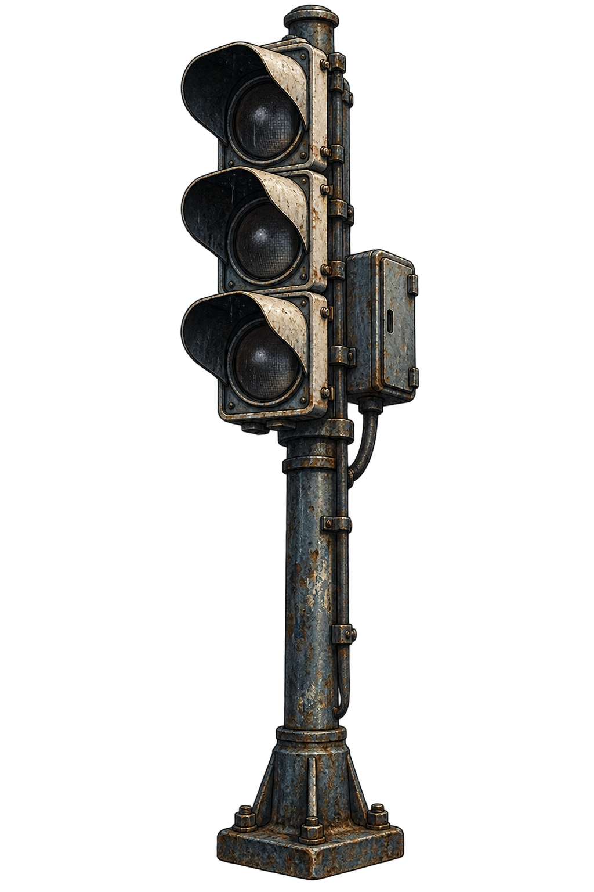
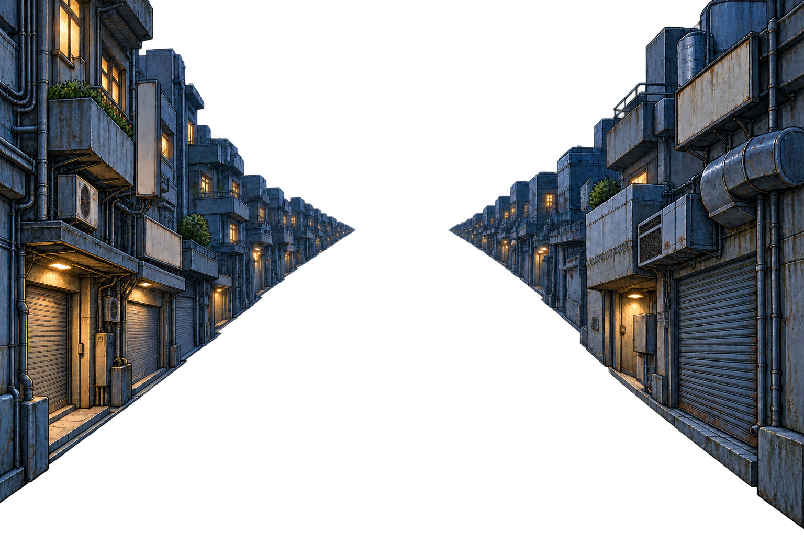
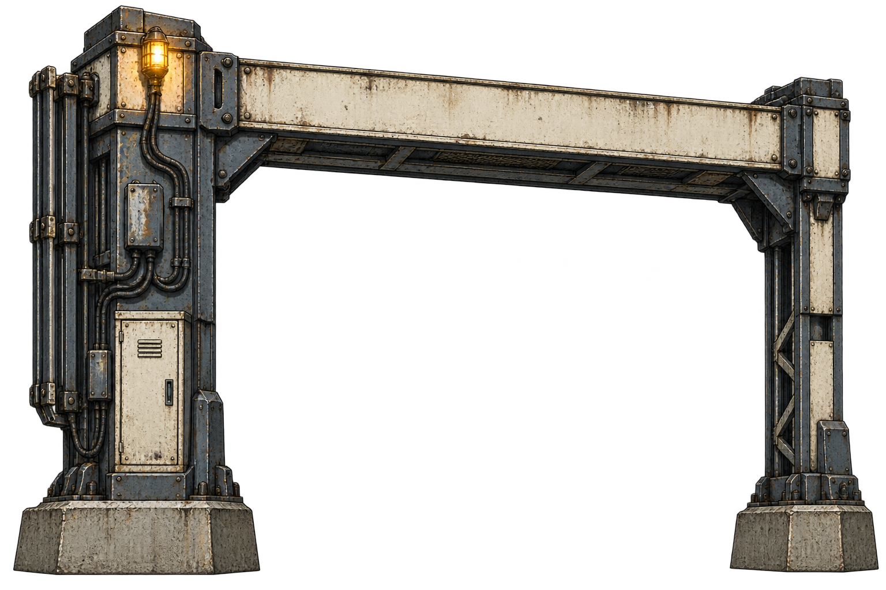

Dead signal • 150 / 280 px height

Three unlit lenses; hood / pole silhouette survives distance.
Unapproved Phase2 candidate. Original assets preserved. No gameplay integration.


Three unlit lenses; hood / pole silhouette survives distance.
Crop excludes near-invisible generated fringe; original alpha unchanged.

Heavy beam and asymmetric service pylon; blank sign, clear central passage.
No roadway or lower crossbar baked into opening.